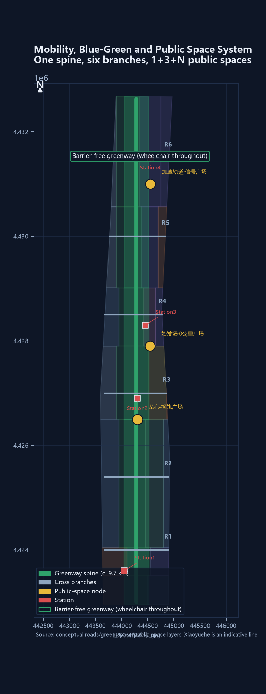

THE SWITCH 2.0 — A Pauseable Public Test Line for the Jing-Zhang AI Innovation Belt
SWITCH 2.0 starts with one small public problem: an ordinary resident finds a night route uncomfortable but cannot say what should be repaired. At Zhongzhiyuan the feeling becomes a minimum problem card; at AI Origin candidate solutions and unknowns are compared; at Dazhongsi a reversible real-world test can PASS, RETURN, or RETIRE. Three yards and seven steps turn a vague complaint into a verifiable, contestable, and returnable public action; protocols, ledgers, metrics, and drawings remain backend evidence, and all implementation content is conceptual.
THE SWITCH 2.0
One-sentence scheme
SWITCH is not an AI device and not a showroom that asks residents to arrive with a finished brief. It is a city test line that turns a vague public discomfort into a verifiable action and can switch back to human service when it fails: one ordinary resident carries one small issue through three yards and seven steps, leaving a problem card, candidate solutions, and a real-world judgment while unresolved items remain unresolved.
One person, one small issue
The proposal uses a resident who walks home from the Dazhongsi station area each evening as a composite fictional person. She does not need technical knowledge or a complete application. Her issue is small but recognizable: a night route from the station to the neighbourhood feels uncomfortable; direction, lighting, and places to pause may each have a break, but she cannot say what exactly should be repaired.
This is a synthetic scenario, not a field interview or a recorded complaint. The proposal does not invent a measurement for her; it makes “not yet known” the content of the next step.
Seven steps: from “I cannot explain it” to “we can return”

| Step | What she experiences | What it produces | What it cannot claim yet |
|---|---|---|---|
| 1. Notice | She walks an uncomfortable night segment and remembers the rough location and feeling | A plain-language issue | The cause has not been measured |
| 2. Describe | At Zhongzhiyuan, oral, paper, and on-site marks add where, when, and who is affected | An initial split between feeling, fact, and guess | A guess is not existing-conditions data |
| 3. Form | A staff member reduces it to a minimum problem card with unknown owners and items to measure | Problem card, unknowns, human entry | No ownership or construction permission is promised |
| 4. Compare | At AI Origin, three candidates are visible: static wayfinding repair, lighting/visibility adjustment, and a small pause point | Candidate card and evidence-gap card | AI cannot make the final choice |
| 5. Test | A removable, observable minimum intervention receives a short real-world test at Dazhongsi | Observation, human feedback, and anomaly records | A concept test is not a completed project |
| 6. Judge | She and site staff walk it again; the result is only PASS, RETURN, or RETIRE | Pass, return, or retirement record | Clicks cannot replace public judgment |
| 7. Return/exit | A wrong result returns to the issue or candidate step; a maintenance issue returns to existing human governance | Return reason, human takeover, or removal proof | No claim of an automatic AI loop or permanent solution |
Within 30 seconds, a first-time reader can retell the point: one person brings one night-route problem, turns “I cannot explain it” into a problem card, compares candidates, and lets ordinary use mark one as pass, return, or retire. If an unknown remains, she can stop and human service continues.
Why the three yards cannot be swapped
The three yards are not three similar parks. They are three non-interchangeable actions in the life of one small issue. Each has one question, one action, and one output.
| Yard | Its one question | What it does | What it does not do |
|---|---|---|---|
| Zhongzhiyuan | “Something feels wrong, but where is the problem?” | Hear ordinary language, inspect the place, separate feeling/fact/guess, and form the minimum problem card | Generate solutions, score KPIs, or make the final governance decision |
| AI Origin | “Now that the issue is formed, what can we try and what evidence is missing?” | Generate candidates, expose assumptions and unknowns, and support comparison and rejection | Treat an AI demo as the answer or choose for the resident |
| Dazhongsi | “Does this candidate work in daily life?” | Run a removable test, re-walk, observe, collect human feedback, and issue PASS/RETURN/RETIRE | Turn a test into permanent deployment or remove the human window |
Zhongzhiyuan hears and narrows the issue, AI Origin opens uncertainty for comparison, and Dazhongsi lets daily use make a reversible judgment. Together they form the minimum discover—form—compare—test—judge—return loop Spatial data Spatial data Spatial data.
What happens when it fails
If a lighting adjustment does not improve the night route, or a new sign makes the path harder for another user to read, the proposal freezes the candidate, keeps the human path available, and returns according to the failure:
- The issue is still unclear: return to Zhongzhiyuan and add location, time, affected people, and the feeling/fact/guess split.
- Evidence is insufficient: return to AI Origin and update the evidence-gap card; no authorization or reliable baseline means no expansion.
- The candidate is wrong: return to comparison and keep the rejection reason instead of rewriting failure as success.
- It is ordinary maintenance: return the design task to existing street, park, or property governance, where people continue the work.
- Safety, privacy, or rights are touched: stop immediately, hand over to people, and remove reversible parts when needed with an exit record.
This return chain attaches to switch-protocol.json, validation-ledger.json, and governance-ledger.json. They are backend evidence and record formats, not a fourth yard or a parallel governance system. Static wayfinding, paper feedback, and a human window remain available at every stage Standard Depth.
V. A public test line that can pause
In 1909, Zhan Tianyou used a herringbone switchback to carry trains up a slope. SWITCH borrows the gesture for another kind of switching: the city does not chase model speed; an issue switches between responsibilities while a return line remains open Source.
The chain is constrained by the taskbook’s public-testing requirement and the generative-AI service standard; a technical demonstration is not written as a permanent space or public-service promise Source Standard.

How to read the drawing. This is not an investment prospectus: the brass spine is the public-access line, the three dark nodes are problem-forming, candidate-comparison, and real-world fulfillment, and the pale boundary is provisional, not a red line.
The first 100 metres: make the seven steps observable
The first opening does not begin with industrial scale. It begins with an ordinary public route. In year one, a roughly 100-metre existing interface is treated as a conceptual demonstration: the Zero Baseline Marker is the entrance; shade, static wayfinding, and a soil observation window form the middle; the far end reaches a table where residents, caregivers, riders, and maintenance staff can draw the route together. The 100 metres is not an approved construction quantity or red line. It compresses “discover—form—compare—test—judge—return” into one reviewable spatial relationship.
A person walking the line first sees milepost, direction, current state, and human entry—not a screen that only plays a demonstration. Sensor readings and manual profiles remain side by side. When an algorithm proposes a candidate route, people can mark discomfort, detours, and inaccessible points on the same table Spatial data Spatial data.
At the Dazhongsi end, a service window and small shops remain present, while the annual ledger shows retained, changed, and retired projects together. A red card turns the signal yellow, freezes data, keeps the human path running, and removes reversible parts by record Spatial data Depth.
This 100-metre opening is not a miniature master plan. It is the corridor’s decision method made observable: who can walk, who can object, what must remain, and what can be withdrawn.
Evidence boundary
The announcement and taskbook support the three scopes, three key areas, deliverable depth, and six agent tasks. Provisional GeoJSON supports relative relationships, conceptual generation, and deterministic recalculation. Neither replaces an official red line, regulatory plan, ownership survey, existing-conditions survey, or approval. The provisional overall boundary recalculates to about 11,412,825 square metres, with a difference of about 0.1125% from the announced 11.4 square kilometres Source Source Metric.
The difference is registered rather than hidden; the official boundary will trigger a full-package recalculation [assumption:A-BOUNDARY-001].
Landmarks, scenarios, projects, funding categories, and responsibility types in this booklet are conceptual designs or interfaces for further work. Where field interviews, slow-variable baselines, or ownership records are absent, the status is explicitly pending measurement, verification, or authorization. A blank is a quality control decision, not a missing page Depth.
Evidence states: designed does not mean enacted
| State | What this package can say | What it cannot say |
|---|---|---|
| demonstrated | Text, drawings, structured protocols, and the deterministic generation chain exist | A concept demonstration is not a field trial |
| documented | Sources, assumptions, risks, return, and exit rules are recorded | A record is not a resident-use result |
| provisional | Geometric relationships, area differences, and spatial interfaces support concept recalculation | The site is approved, owned, or built |
| unknown | Interviews, slow-variable baselines, access conditions, and ownership remain explicit gaps | A synthetic scenario cannot fill an unknown |
| future validation | Authorized parties must perform field walks, professional review, and public feedback later | Effects, acceptance, or performance cannot be claimed in advance |
VI. Design Basis and Source List
The basis has four layers: the announcement sets the project boundary, the agent taskbook sets the questions, planning and AI standards set professional floors, and public reporting supplies historical and industrial context. No layer is allowed to overrule another.
| Evidence layer | Used here for | Explicitly not used for |
|---|---|---|
| Announcement and taskbook | Three scopes, three areas, two wings, and six agent deliverables | Turning written bounds into precise polygons |
| Planning, land-use, accessibility, and AI standards | Design depth, classification, human service, and data boundaries | Project approval or engineering review |
| Public railway, park, and station history | Cultural narrative and checkable historical anchors | Existing-conditions survey |
| This package’s GeoJSON, metrics, and protocol | Conceptual relationships, scenario flow, and recalculable drawings | Survey, capacity, or performance data |
The formal reading is “design recommendation + evidence interface.” Each recommendation must answer four questions: where is it placed, whom does it serve, who reviews it, and how is it withdrawn if it fails Standard Standard Source.
VII. Three-Level Scope Framework
The three scales carry different responsibilities; one plan is not simply enlarged three times.
| Scale | Task | Deliverable |
|---|---|---|
| 43.6 sq km coordination-study area | Give science cities, communities, parks, and the Beijing-Tianjin-Hebei interface a comparable language | Method package, regional interfaces, annual public-ledger format |
| About 11.4 sq km overall design area | Turn the three areas and two wings into a continuous public network | Spine, blue-green network, land-use relationships, transport interfaces |
| About 368.4 ha key-area range | Put scenarios into observable working yards | Zhongzhiyuan, AI Origin, and Dazhongsi pilot units |

The three key areas are not three isolated parks. They are one minimum loop: Zhongzhiyuan measures, AI Origin lets disagreement be heard, and Dazhongsi checks whether commitments enter ordinary life Spatial data Spatial data.
No scenario moves directly from a laboratory to belt-wide expansion; the sequence is measure, negotiate, then fulfill Spatial data Depth.
VIII. Coordinated Research Area: Industry and Future City Research
Three yards and two sidings: making switching operational
SWITCH 2.0 uses one spine, three working yards, and two coordination sidings:
| Spatial role | Area/interface | Conversion problem | What it does not promise |
|---|---|---|---|
| Problem-forming yard | Zhongzhiyuan | Turn ordinary language into a minimum problem card with feeling, fact, guess, and unknowns | Equipment scale, compute, or industry orders |
| Candidate-comparison yard | AI Origin Community | Put candidates, assumptions, evidence gaps, and human choice in public view | Tenants or automatic AI decisions |
| Real-world fulfillment yard | Dazhongsi AI industrial cluster | Test service, consumption, human windows, and small shops together in daily life | Business returns or forced replacement of uses |
| Service Siding | Zhongguancun technology-services interface | Standards, legal support, talent, funding, and compute channels | A named institution or budget |
| Scenario Siding | Xiaoyuehe and community interfaces | Authorized real questions and public-service feedback | Personal or non-public data exchange |
The three positions become concrete: the Centennial Jing-Zhang Cultural Belt carries memory, the urban AI living-experience belt carries daily use, and the AI integration belt carries experiments. The five functions become research, R&D, scenarios, service, and governance interfaces that can be disconnected, transferred, and reviewed rather than fixed forever Source Source.
The brand keeps one action that can be recognized on site: two rails split at the switch heart into a herringbone and a Y, beside the fixed fields “milepost — direction — state — human entry.” It connects railway memory while reminding visitors that the right to choose remains public. Rail blue-grey, brass markers, and signal colours are shared vocabulary for wayfinding and the annual ledger, not a separate event brand Source Depth.
Regional coordination: export the ruler, not an unverified conclusion
The corridor sits inside Zhongguancun Science City. Its relationship with Beiwei Community, Future Science City, Huairou Science City, the Economic-Technological Development Area, and the Beijing-Tianjin-Hebei region should be method exchange. It can export four release gates, baseline templates, failure records, and annual-ledger formats; it can receive urbanization test questions and cross-region comparisons. It does not export personal data, approval conclusions, or invented partnerships Source.
| Partner | Can receive | Can contribute | Precondition |
|---|---|---|---|
| Beiwei Community | Community scenario list and human-review template | Resident-use questions | Resident authorization and dialogue |
| Future Science City | Urbanization test questions | City testing of common technologies | Technical and professional review |
| Huairou Science City | Public-translation methods | Measurement and calibration questions | No non-public research data |
| Development Area | Engineering scenario-test format | Manufacturing retest needs | Enterprise permission and safety review |
| Beijing-Tianjin-Hebei | De-located method package | Cross-city public-service comparisons | De-identification and local review |
Global cases: borrow mechanisms, not scale
| Case | Mechanism borrowed | Local translation | Explicitly not copied |
|---|---|---|---|
| Barcelona Superblocks | Reallocate street space | Walking and staying priority at three interfaces | Closed-car superblock form |
| Paris 15-minute city | Organize nearby services | Fifteen-minute service sampling frame | Top-down functional instruction |
| Helsinki Kalasatama | Treat resident time as a goal | Time and human-service measures | A single time ranking |
| Amsterdam AMS Institute | Organize a living lab | Zhongzhiyuan baseline lab | Fixed budget and institutional model |
| Toronto Quayside | Data-governance warning | G1 data gate and exit proof | Dense sensor network or data-trust promise |
| Singapore Punggol | Park-university collaboration | Service-siding test channels | A newly built digital district |
| Seoul Digital Mayor | Keep public measures visible | Annual public-ledger wall | Real-time control-room governance |
These cases provide questions, not local conclusions Source Depth.
Ecosystem support is not written as a company list but as three reversible resource relationships: compute is requested by task window and settled by usage records; funding is discussed in two stages, small pilots and expansion only after G4; data begins with synthetic or cleared material and access stops with deletion at exit. Providers still require authorization, named responsibility, and professional review. This proposal does not turn a channel into a budget, investment, or deployment promise Source Depth.
The eight elements—land, space, industry, funding, talent, compute, data, and scenarios—follow one sequence: apply with object, permission, and responsibility; leave a version, human review, and public artifact; then release resources, remove components, and publish the difference. They are replaceable collaboration interfaces, not an existing industrial scale.
IX. Overall Design Area: Urban Renewal and Regulatory-Plan-Level Urban Design
A spine, three yards, and three interfaces
The spine follows the Jing-Zhang heritage park and existing public space. “Acceleration” does not mean mass demolition. The three yards measure, negotiate, and fulfill; the three east-west interfaces repair school-community, rail-park, and industry-life breaks. New interventions prioritize dry-assembled, light, removable components Spatial data Spatial data Depth.
The decision chain: problem—move—owner—evidence—exit
| Urban problem | Spatial move | Daily owner | Release evidence | Failure response |
|---|---|---|---|---|
| A continuous greenway with broken experience | Canopy plots, rain windows, walking repairs | Park, street, and operating teams | SV-01 and SV-02 retests | Repair shade and drainage; pause expansion |
| Recommended routes replacing real choice | Co-drawing table, static signs, human window | Community and accessibility reviewers | SV-03 and objection record | Freeze recommendation; human takeover |
| AI traffic squeezing shops and services | Fulfillment yard, shop observation, equivalent human path | Street, shop, and service teams | SV-04 and correction tickets | Reduce scenario; return to human service |
| Children left with only an algorithmic route | Segmented escorted tests and caregiver review | Schools, caregivers, safety staff | SV-05 and safety record | Stop immediately; return to escorted travel |

Scenario-Code is an auxiliary design language. It records scenario openness, service redundancy, data boundaries, and retirement difficulty; it does not replace FAR, height, density, setbacks, transport, or engineering review. Formal planning conclusions must be recalculated after official boundaries and regulatory conditions arrive Standard [assumption:A-CONTROLS-003].
Scenario-Code keeps only three readable states: open experience, bookable collaboration, and controlled test. They are not statutory metrics. They remind operators that the closer a scene comes to real data and real service, the earlier its named owner, human entry, objection record, and exit proof must exist. Professional development still depends on regulatory planning, ownership, fire safety, transport, and measured conditions Depth Depth.
X. Detailed Design of Key Areas

1. Zhongzhiyuan: measure before accelerating
On the first rainy day of a one-year pilot, the soil observation window records a sensor reading and a manual profile together. If they conflict, the project cannot select the better-looking result to request expansion. The open baseline laboratory, canopy plots, human-review room, and failure-sample garden come before industrial acceleration. Industry tests remain in a sandbox, with access, retention, and deletion proof frozen before G1 Spatial data.
Zhongzhiyuan’s value is not more equipment. It is making “measure accurately” a public capability: operators, researchers, and ordinary users can see what is known, what remains unknown, and which error sends a scenario back to human operation; this yard makes room for time needed by a reliable measurement Source.
2. AI Origin: give disagreement a place to stop
The ground floor is a public table where disagreement can stop, rather than a showroom. An algorithm may propose a “safer” route for a child or wheelchair user, while caregivers, riders, and front-line workers identify other breaks. The co-drawing table puts these differences on one map; human help, static wayfinding, and paper feedback remain available. Objections, revisions, and unresolved questions stay together. The public industrial context of AI Origin is background evidence, not an authorized operating entity Source Spatial data.
3. Dazhongsi: check whether commitments are delivered
Dazhongsi translates “launch” into daily questions: Is the human window still there? Did waiting actually shrink? Can small shops remain? Are seats under trees used? A public-ledger wall, service-appeal desk, annual jury table, and small fulfillment market form the yard. Retained and retired projects are shown together. Retirement is evidence that the system can limit loss. Success is not ranked by traffic or financing, but by equivalent human service, closed objections, and actual removal after failure Spatial data.
XI. AI Innovation Ecosystem, Personas, and AI+ Scenarios
How the six agent tasks become one chain
| Task | Rebuilt deliverable | Checkable location |
|---|---|---|
| agent.1 Overall concept | SWITCH name, three yards/two sidings, Scenario-Code, brand direction | Sections V, VIII, IX and overview |
| agent.2 Ecosystem | Seven cases, apply-and-exit mechanisms for compute, funding, and data, five regional interfaces | Section VIII and sources.json |
| agent.3 AI+ scenarios | Twelve cards, three industry tests, six personas, human fallback | This section and switch-protocol.json |
| agent.4 Public space | Spine, cross-connections, five landmarks, ten reversible components | Sections XIII, XIV and layers |
| agent.5 Culture | Railway history, internationally readable wayfinding, clearance-first heritage work | Sections V, VIII, XIV, XVII |
| agent.6 Long-term operation | Four-season rhythm, annual ledger, relay ownership, exit | Section XV and validation-ledger.json |
Six user groups: public value before technical convenience
| User | Receives | Does not pay the cost of | Participation evidence |
|---|---|---|---|
| Commuters and walkers | Continuous offline-capable routes and human help | Being forced into an app | Breakpoint map and retests |
| Wheelchair users and caregivers | Co-tested accessible routes | Providing unnecessary identity data | Audit records and repair list |
| Children and caregivers | Segmented escorted routes and easy exit | Identifiable tracking | Walk reviews and stop records |
| Local shops | Equivalent human service and impact appeal | Trading participation for rent, credit, or status | Aggregated street ledger |
| Developers and students | Sandboxes, classes, and contribution recognition | Trading open-source work for personal data | Course, contribution, and jury rules |
| Older and non-digital users | Human windows, paper wayfinding, and non-digital feedback | Being downgraded for not using AI | Service statistics and correction records |
Twelve scenario cards: use scenarios to explain space, not replace planning
Every card registers its users, location, permission, data, human review, first public artifact, and exit condition. Thresholds are frozen after the first-year baseline; none is presented as an operating result today.
| Card | Scenario and location | First public artifact | Red-card condition |
|---|---|---|---|
| SW-01 | Switch Heart Art Plaza / Switch Heart | Curatorial record and complaint log | Safety incident or rising complaints |
| SW-02 | Signal Light AI Governance / Zhongzhiyuan | Definition sheet and reconciliation log | Unexplained state or data overreach |
| SW-03 | Timetable AI Mobility Dispatch / Belt spine | Event review and breakpoint map | Human intervention over line or unresolved accessibility complaints |
| SW-04 | Switchman’s Cabin Takeover Test / Zhongzhiyuan | Drill report and responsibility signatures | Takeover incident or unfrozen data after red card |
| SW-05 | Marshalling Yard Enterprise Sandbox / Dazhongsi | Data dictionary, audit summary, exit form | Raw-data overreach or unproven deletion |
| SW-06 | Departure Yard Founder Launch / AI Origin | Review rules and appeal record | Missing human review or conflict of interest |
| SW-07 | Milepost AI Cultural Guide / heritage siding | Content review and correction record | Historical error, unclear rights, or required personal location |
| SW-08 | Locomotive Shed AI Classroom / AI Origin | Lesson record and teacher review | Missing teacher, child-data overreach |
| SW-09 | Siding Pop-up Scenarios / Scenario Siding | Permit, inspection, and removal records | Permit expiry, blocked movement, rising complaints |
| SW-10 | Ticket Gate AI Public Service / Dazhongsi | Service statistics and human-path proof | Reduced human window or uncorrected error |
| SW-11 | Tunnel Privacy Shield Test / Zhongzhiyuan | Test summary and deletion proof | Leakage or irreproducible audit |
| SW-12 | Terminal AI Recognition Hall / spine | Jury rules, objections, and revision list | Untraceable contribution or unanswered objection |
SW-04, SW-05, and SW-11 are industry tests, but all three first pass human, safety, and data gates. “Industry support” therefore means an auditable test interface, not an investment slogan Depth [assumption:A-SCENARIO-005].
Five slow variables and four release gates
Scenarios are the fast track; slow variables are the chassis. SV-01 canopy and shade, SV-02 rain infiltration, SV-03 accessibility continuity, SV-04 local-use continuity, and SV-05 children’s independent travel are measured before targets are set. G1 data and safety, G2 human service and access, G3 affected-group review, and G4 annual slow-variable health mean that a failed gate leaves a scenario yellow or retired.
| Slow variable | First-year sample and method | HOLD response |
|---|---|---|
| SV-01 Canopy and shade | Two plots in each north/middle/south segment plus one untreated comparison; quarterly, with summer shade and seat-availability checks | Two worsening seasons trigger shade repair before any event expansion |
| SV-02 Infiltration and recovery | Low points, rain gardens, and Xiaoyue River interface; record after notable rain, with manual profiles beside sensor readings | Persistent disagreement or worsening from baseline freezes the point and returns to manual verification |
| SV-03 Accessibility continuity | One segment each at North Third Ring, Zhichun Road, and station access; monthly co-tests by wheelchair, stroller, and walkers, with before/after and adjacent comparisons | A break unrepaired for two months pauses the relevant route recommendation |
| SV-04 Local-use and shop continuity | Voluntary shops around Dazhongsi and the station front; quarterly reporting and annual aggregation; refusal is not treated as a negative finding | Boundary or rights failure, or two worsening years, returns the issue to dialogue without publishing shop-level data |
| SV-05 Children’s independent travel | A school-community short route split into three retractable segments; segmented escort tests during term, recording event types only | Any safety event or participant exit stops measurement and returns to human escort |
Full anomaly handling, comparison design, validation phases, public fields, and scenario-card verification methods are in visual/assets/validation-ledger.json. When sensor and manual records conflict, a participant exits, or authorization is missing, the anomaly remains and the point/card conclusion pauses; anomalies are not deleted to manufacture a trend. The current state is pending measurement, not an existing score Metric Depth.
XII. Land Use, Building Scale, and Retain-Renovate-Demolish Strategy
The submission geometry supplies 26 conceptual land-use units, building footprints, and public-space relationships for coverage, adjacency, and drawing checks. It does not decide the fate of any real building. The sequence is fixed: retain, low-impact repair, reversible insertion, then a demolition decision only after professional review. Statutory FAR, height, density, setbacks, ownership, and municipal capacity remain pending Spatial data Metric [assumption:A-CONTROLS-003].
Buildings are not containers for AI. Ground floors prioritize human service, toilets, continuous accessible entrances, non-digital feedback, and removable exhibitions; upper floors may then host incubation, education, and enterprise service. Every new component needs installation, maintenance, authorization, and removal fields before entering the opening list Standard.
XIII. Transport, Rail, Municipal Infrastructure, and Public Services

Transport design gives interfaces, not engineering conclusions. The spine stays continuous north-south; three east-west interfaces repair breaks for walking, wheelchairs, bicycles, and transit access. Wayfinding offers static, unpowered, and human paths. Any intelligent dispatch keeps a fixed timetable and a human contingency Spatial data Standard.


Municipal systems, fire safety, rail interfaces, bridges, tunnels, and underground space lack cleared evidence. Section widths and equipment in the drawings only explain shared relationships. Detailed work should begin with existing cross-sections, ownership, capacity, and safety review, followed by feasibility work Depth Depth.
XIV. Blue-Green Network, Public Space, and Urban Character
Green, public-space, and building ratios are conceptual quantities derived from the submission geometry, not statutory values. The formulas, sources, confidence, and pending status of 45 metrics are in metrics.json. Spatial quality is measured through bodies: summer shade, post-rain recovery, wheelchair detours, children’s routes, and local-shop continuity Metric Metric.
Five slow-variable landmarks
| Landmark | Anchor | What the public reads—not a “tech spectacle”—is |
|---|---|---|
| L1 Qinghuayuan station remnant | AI Origin side | A station and Zhan Tianyou’s inscription: how speed once bowed to slope |
| L2 Zero Baseline Marker | North end of Zhongzhiyuan | Measurement methods, failure records, and current unknowns |
| L3 Objection Platform | AI Origin | Minority views, revisions, and unresolved questions |
| L4 Dazhongsi Ten-Year Ledger Wall | Dazhongsi | Retained, changed, and retired projects together |
| L5 Release-Gate Signal Group | Four gates on the spine | Why a project may accelerate and when it must stop |
The L1–L5 set is the package’s only landmark catalog; names, anchors, spatial references, and conceptual status are registered in visual/assets/catalogs.json#landmarks and synchronized to the web page, metrics, matrices, and booklet Spatial data.
Heritage placement, construction-control areas, lighting, and wayfinding require cleared records. This package draws no heritage boundary and makes no compliance conclusion Source Depth.
Reversible component library
| Component | Suitable location | Evidence connection |
|---|---|---|
| Zero Baseline Marker | Spine entrance | G1 and five SVs |
| Soil observation window | Zhongzhiyuan and rain gardens | SV-02 |
| Canopy retest plot | Greenway | SV-01 |
| Slow-variable route marker | Spine and cross-interfaces | SV-03, SV-05 |
| Children’s escorted-route sign | School-community routes | SV-05 |
| Objection Platform | AI Origin | G3 |
| Non-digital feedback box | AI Origin and Dazhongsi | G2, G3 |
| Annual ledger board | Dazhongsi | G4 |
| Human service point | Dazhongsi and community stations | SV-04 |
| Reversible paving and facility module | Twelve scenario nodes | Exit gate |
All components are reference specifications, not construction drawings; removal should restore the original interface Depth.
XV. Renewal Projects, Implementation Policy, and Phasing
Six launch packages covering eighteen conceptual projects
To keep 18 projects from becoming a priority-free list, this version groups them into six launch packages. Each has a first-year action, a release condition, and an exit.
| Package | Projects | First-year action | Release condition |
|---|---|---|---|
| A Baseline | P01, P02, P06 | Plots, observation windows, failure garden | G1 data boundary and authorization |
| B Interfaces | P05, P12, P14 | Co-test three breakpoint routes | G2 access and human contingency |
| C Origin | P03, P07, P09 | Shared ground floor and education pilot | G3 objections closed |
| D Fulfillment | P08, P13, P16 | Human service, ledger wall, limited event | G3 service equivalence |
| E Culture | P10, P11, P17, P18 | Rights clearance, content review, removable wayfinding prototype | Heritage and rights confirmed |
| F Industry | P04, P15 | Sandbox and developer-contribution prototype | G1/G4 data and public value |
The unique catalog of the 18 conceptual projects is below. Names, launch packages, anchors, and conceptual status for P01–P18 resolve to visual/assets/catalogs.json#renewal_projects. geometry/phasing.geojson records only three conceptual phasing bands, not a per-project engineering ledger; matrices and assumptions add dependencies, responsibility types, and acceptance directions. No project is presented as approved Spatial data Spatial data Depth.
| Project ID | Unique project name | Launch package |
|---|---|---|
| P01 | Switch Heart Plaza and Central Park | A Baseline |
| P02 | Marshalling Yard Forecourt and Intelligent-Native Experience Venue Retrofit | A Baseline |
| P03 | Departure Yard Zero-Kilometer Plaza and Open-Source Incubator Retrofit | C Origin |
| P04 | Acceleration Track Signal Plaza and Governance Lab | F Industry |
| P05 | Southern Greenway Active Segment | B Interfaces |
| P06 | Northern Greenway Ecological Segment | A Baseline |
| P07 | Origin Talent Housing | C Origin |
| P08 | Dazhongsi Business-Service Complex Retrofit | D Fulfillment |
| P09 | Locomotive Shed Education Lab | C Origin |
| P10 | Developer Recognition Wall | E Culture |
| P11 | Historical Siding AR Guide | E Culture |
| P12 | Station Access and Slow-Mobility Breakpoint Repair | B Interfaces |
| P13 | Switch Heart Visitor Service Centre | D Fulfillment |
| P14 | Greenway Accessibility and Slow-Mobility Breakpoint Repair | B Interfaces |
| P15 | Developer Digital Passport | F Industry |
| P16 | SWITCH CON Annual Forum Venue | D Fulfillment |
| P17 | Historical Siding Interpretation and Wayfinding | E Culture |
| P18 | Pilgrimage Route Lighting and Wayfinding | E Culture |
Four-season operation and relay ownership
Spring sets plots and permissions; summer runs route co-tests and red-card drills; autumn reviews sandboxes, shops, and services; winter publishes the annual ledger. Ownership is designed as a relay: the first operating team opens the ledger and recruits partners, while streets, universities, communities, and professional teams join by project. An activity that cannot leave a downloadable public artifact for two years stops; an unclaimed facility is removed as a reversible component Depth.
| Phase | Opening action | Participants | Measurable evidence | Phase decision |
|---|---|---|---|---|
| Months 0–3: baseline | Clear rights, fix sample points, install reversible observation parts | Operating team, professional reviewers, street and participants | Permission record, sample-point table, human-service fallback | No pilot without evidence |
| Months 4–6: small pilot | 100-metre route, co-drawing table, one red-card drill | Residents, caregivers, maintenance staff, school and community | Breakpoint map, retest record, objection ledger, drill report | Stay yellow if G1–G3 are open |
| Months 7–12: review | Sandbox, shop/service review, annual ledger | Scenario operators, shopkeepers, developers, jury participants | Five slow variables, human takeover, exit form, public artifact | G4 chooses retain, shrink, revise, or retire |
| Year two: renewal | Renew only reviewed projects with a successor | Original operator and relay team | Version difference, maintenance record, recalculated metrics | No artifact or successor means removal |
The opening action is only a 100-metre demonstration, one red-card withdrawal drill, and three no-permanent-construction pilots (SW-01, SW-05, SW-09). If they fail, they shrink or leave. Investment, traffic, or event photographs cannot substitute for acceptance. The machine record for seasons, the annual ledger, and responsibility fields is validation-ledger.json Source.
XVI. Metrics, Area Recalculation, and Compliance Matrix
Metrics are divided into three classes:
1. Recalculable design quantities: provisional area, land-use coverage, conceptual green and public-space quantities, scenario nodes, key areas, and building relationships, calculated deterministically from GeoJSON in EPSG:4548. 2. Context references: public park, industrial, and historical figures used to calibrate context, not project performance. 3. First-year measurements: five slow variables, service equivalence, shop continuity, children’s routes, and human takeover results, all currently unknown.
The complete list and formulas for 45 metrics are in metrics.json. Key areas, 12 scenario cards, the five L1–L5 landmarks, the eighteen P01–P18 projects, and the six agent tasks are cross-checked by the unique catalog and the task, standards, and design-depth matrices. The narrative explains why; the structured files prove completeness Metric Metric Depth.

Whenever an official boundary, regulatory plan, or existing-conditions dataset arrives, the deterministic pipeline recalculates the whole package and records a before/after table in changelog.md; local patches must not conceal boundary change [assumption:A-BOUNDARY-001].
XVII. Risk, copyright, and compliance
The risk register covers data privacy, heritage, ownership, public trust, engineering feasibility, boundary misreading, operating succession, and copyright in risk.json. This rebuild has three controls:
- No non-public spatial material, unauthorized personal data, or secret map is used. Children, shopkeepers, and accessibility participants are voluntary, data-minimized, de-identified, manually reviewed, and free to exit.
- Provisional boundaries, illustrations, industrial statistics, and scenario demonstrations are not written as approvals, existing facts, or government commitments. AI does not replace planning, legal, engineering, or public decisions.
- A red card is operational, not decorative: data freezes, human service remains, responsibility is signed and public, and repeated failure retires the scenario. Unclear rights for history, fonts, images, or brands keep them out of the release package.

The narrative, bilingual translation, drawings, and offline page were produced with AI assistance; geometry and metrics are recalculated by deterministic pipelines. Generation and authorization details are in report/copyright_statement.md. The package uses CC-BY-4.0; all scenarios remain conceptual and require separate authorization and professional review before implementation Source Standard Depth.
XVIII. References
1. “International Urban Design Scheme Competition for the Centennial Jing-Zhang AI Innovation Belt,” Beijing Municipal Commission of Planning and Natural Resources, Haidian Branch, 2026 Source. 2. “Open-source Competition Taskbook Extract for Global Intelligent Agents,” 2026 Source. 3. Measures for Urban Design Management, Ministry of Housing and Urban-Rural Development Standard. 4. Measures for the Preparation and Approval of Regulatory Detailed Plans, Ministry of Housing and Urban-Rural Development Standard. 5. Guidelines for Land and Sea Use Classification, Ministry of Natural Resources Standard. 6. Law of the People’s Republic of China on the Construction of an Accessible Environment, Standing Committee of the National People’s Congress Standard. 7. Interim Measures for the Management of Generative AI Services, seven national authorities Standard. 8. Public sources on the Jing-Zhang railway, herringbone switchback, Qinghuayuan station, heritage park, and regional industry; see sources.json Source.
The delivery rule is simple: make it readable before making it machine-checkable; test reversibly before discussing permanence; write the stop condition before claiming how fast AI can go.